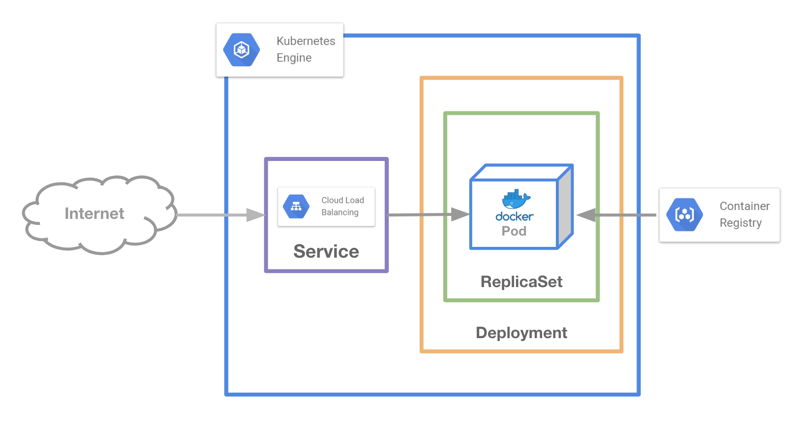

自作アプリを動かす

この章ではDockerイメージの作成を行い、GCPのDockerレジストリのGCRへpushし、そのイメージをGKE上で立ち上げてみます。
GKEをプロダクションで使う場合はDockerイメージの格納にGCRを使うのが一般的でしょう。
Expressプロジェクトを作成¶
まずはExpressフレームワークをローカルで作成します。
Cloud Shell にはnodeが入っているのでそれを使ってもよいのですが、Dockerの使い方の1つである「ホストの環境を汚さずにコマンドを実行できる」ことを体験するためにDockerでnodeの環境を用意します。
Nodeのシェル起動します。
ここで重要なのは現在のディレクトリをコンテナの /data へマウントしていることです。
$ docker run -it -p 3000:3000 -v `pwd`:/data node:10-alpine ash
コンテナ内に入った後、Node.jsが存在することを確認します。
# node -v v10.15.3
Expressプロジェクトの作成を行います。
# cd /data # npm install -g express-generator # express myapp # cd myapp # npm install
ここでシェルを抜けずに # npm start でExpressを起動すると、3000ポートでExpressの起動を確認することができます。
ローカルにExpressのコードが展開されていることを確認¶
Nodeコンテナからexitし、ホストにExpressのコードが存在することを確認します。
# exit $ ls myapp $ ls myapp/ bin node_modules package.json routes app.js package-lock.json public views
Expressのコードを編集¶
ホストネームを表示させるようにして、複数台コンテナを立てたときに別のコンテナにアクセスできていることを確認できるようにします。
$ vi routes/index.js
var express = require('express');
var router = express.Router();
+var os = require('os');
/* GET home page. */
router.get('/', function(req, res, next) {
- res.render('index', { title: 'Express' });
+ res.render('index', { title: os.hostname() });
});
module.exports = router;
Dockerfileの作成¶
$ vi Dockerfile
FROM node:10-alpine WORKDIR /app COPY package.json package-lock.json /app/ RUN npm install COPY . . CMD ["npm", "start"]
$ docker build -t myapp . $ docker run -p 3000:3000 myapp
http://localhost:3000 へアクセスして確認
GCRへpush¶
Google Container Registry へ作成したイメージを登録します。
pushをするためにGCRの命名規則に則ったtagをイメージへ付与します
$ prjid=$(gcloud config get-value project) $ docker tag myapp asia.gcr.io/${prjid}/myapp
GCRの認証を行い、作成したイメージをpushします。
$ gcloud auth configure-docker $ docker push asia.gcr.io/${prjid}/myapp
デプロイ¶
GCRへ上げたイメージを使ってExpressをデプロイを実行
$ kubectl run myapp --image=asia.gcr.io/${prjid}/myapp $ kubectl get all -l run=myapp NAME READY STATUS RESTARTS AGE pod/myapp-959b77d8-gm8dt 1/1 Running 0 37s NAME DESIRED CURRENT UP-TO-DATE AVAILABLE AGE deployment.apps/myapp 1 1 1 1 38s NAME DESIRED CURRENT READY AGE replicaset.apps/myapp-959b77d8 1 1 1 38s
ロードバランサのセットアップ¶
kubectl expose でロードバランサのセットアップを行います。
$ kubectl expose deploy myapp --port=80 --target-port=3000 --type=LoadBalancer service/myapp exposed $ kubectl get all -l run=myapp NAME READY STATUS RESTARTS AGE pod/myapp-959b77d8-gm8dt 1/1 Running 0 9m NAME TYPE CLUSTER-IP EXTERNAL-IP PORT(S) AGE service/myapp LoadBalancer 10.3.242.32 34.85.67.170 80:31345/TCP 7m NAME DESIRED CURRENT UP-TO-DATE AVAILABLE AGE deployment.apps/myapp 1 1 1 1 9m NAME DESIRED CURRENT READY AGE replicaset.apps/myapp-959b77d8 1 1 1 9m
増やしてみる¶
kubectl scale コマンドでPodを3台に増やしてみましょう
$ kubectl scale deployment myapp --replicas=3 deployment.extensions/myapp scaled $ kubectl get all -l run=myapp NAME READY STATUS RESTARTS AGE pod/myapp-959b77d8-gm8dt 1/1 Running 0 12m pod/myapp-959b77d8-rcw8d 1/1 Running 0 24s pod/myapp-959b77d8-tgzdx 1/1 Running 0 24s NAME TYPE CLUSTER-IP EXTERNAL-IP PORT(S) AGE service/myapp LoadBalancer 10.3.242.32 34.85.67.170 80:31345/TCP 10m NAME DESIRED CURRENT UP-TO-DATE AVAILABLE AGE deployment.apps/myapp 3 3 3 3 12m NAME DESIRED CURRENT READY AGE replicaset.apps/myapp-959b77d8 3 3 3 12m
時間をあけて何度かアクセスしてみるとホスト名がかわっていることがわかります（キャッシュに注意）。
お片付け¶
クラスタの削除
$ gcloud beta container clusters delete standard-cluster-1 --zone "asia-northeast1-a"
Dockerイメージの削除
$ gcloud container images list --repository asia.gcr.io/${prjid} NAME asia.gcr.io/<YOUR PROJECT ID>/myapp $ gcloud container images delete asia.gcr.io/${prjid}/myapp $ gcloud container images list --repository asia.gcr.io/${prjid} Listed 0 items.